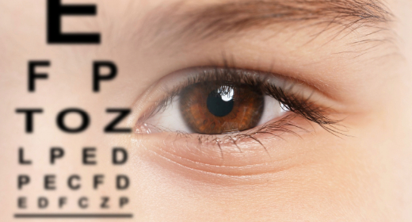

A full examination of your vision and eye health, including glasses, eye pressure and the retina, to find problems early.

A comprehensive eye check-up looks at much more than how well you read the letter chart. It checks your glasses prescription, eye pressure, eye movements and the health of every part of the eye.
Many eye diseases, such as glaucoma, diabetic retinopathy and early cataract, cause no symptoms at first. A full exam can find them before they affect your sight.
It is the right starting point for anyone with an eye concern, and a good routine check for adults, especially after the age of 40.
At a glance
Book a full eye check if you have:
Near, far or both.
Especially after screens or reading.
Ongoing irritation.
Glare or poor vision when driving.
Conditions that affect the eyes.
Time for a routine exam.
Most adults should have a full eye exam every 1–2 years, and every year after 60 or if you have diabetes, glaucoma risk or a family history of eye disease.
Good vision does not always mean healthy eyes. Glaucoma and diabetic changes can be present even when you see well.
Have a check-up more often if you
 Specialist Ophthalmologist
Dr. Mohammed Anwar Ahmed
Meet the team
Specialist Ophthalmologist
Dr. Mohammed Anwar Ahmed
Meet the team
Vision, pressure, front and back of the eye in one visit.
Glasses tested and fine-tuned for you.
Slit lamp examination and retinal checks.
Ophthalmologists and optometrists working together.
Your symptoms, health and family history.
Testing near and distance vision and your prescription.
A pressure check and slit lamp examination.
Often with dilating drops to see the back of the eye.
If drops were used, vision is blurry and bright for a few hours.
Explained at your visit with any treatment needed.
Allow a few days to adapt to a new prescription.
In 1–2 years, or sooner if advised.
Do
Avoid
Usually 30–60 minutes, a little longer if dilating drops are used.
Often, yes, to examine the retina properly. Your vision will be blurry for a few hours.
A glasses test checks your prescription. A comprehensive exam also checks eye health and disease.
Yes. Tests are adapted for children, and we recommend a check before starting school.
A full examination is the best way to keep your eyes healthy for life.
Sunday to Friday · 9 am – 1 pm, 4 pm – 9 pm